Computing neuron network (population) properties after learning
Contents
The functions needed to compute the properties are in
addpath('Functions\')
Theoretical background and assumptions
After learning, connection weights between neurons responding to the same stimulus are significantly increased. To study the effect of learning and investigating memory states, we consider a network after learning 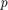 stimuli. Each stimulus activated an equal fraction of 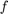 (coding level) neurons of the excitatory pool. We also assume that 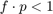 to ensure that only a very small fraction of neurons would be active for more than one stimulus (non-overlapping stimuli assumption). We can divide the excitatory population into a selective pool (selective for the stimulus just presented), other stimuli-selective pools (not active for the particular stimulus just presented) and a non-selective pool (neurons that do not respond to any of the stimuli presented).
Inside a selective pool, the synaptic strength is multiplied with a factor 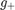 (larger than 1), whereby neurons from different selective pools AND connections from the non-selective pool to selective ones are multiplied with 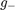 (smaller than 1). As it has been recorded that the spontaneous activity after learning is almost unaffected, the reduction factor is given by
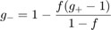
Furthermore, we account for potential variability in the synaptic strengths by randomly drawing from a Gaussian distribution with mean J and standard deviation 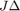. Hence, the firing rate of the currently active pool, 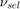 is determined by the transfer function with 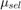 and 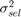 given by:
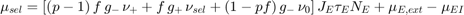
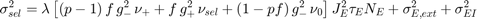
with 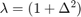. The firing rate of the neurons selective to an other stimulus, 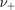 is determined by its transfer function with 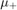 and 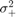:
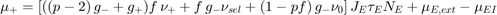
![$$ \sigma^2_{+} = \lambda\left[((p-2)\, g^2_- + g^2_+)f\,\nu_+ + f\, g^2_-\nu_{sel} + (1-pf)\, g^2_-\nu_0 \right] J^2_E\tau_E N_E + \sigma^2_{E,ext} + \sigma^2_{EI} $$](CompNeuNetLearn_eq11201679149560047906.png)
Last but not least, the firing rate of the non-selective pool is given through its transfer function parameterized by 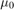 and 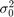:
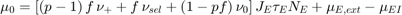
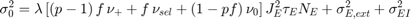
Finally, an inhibitory neuron sees an averaged excitatory activity of
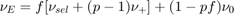
No Learning (no strengthening of synapses)
If is 1 (no strengthening of synapses), no matter and , the firing rates would be the same before and after learning. We choose the following parameters:
LrnPar.f = 0.01;
LrnPar.p = 50;
LrnPar.m = 1.0;
LrnPar.SDJ = 0.0;
ModPar = [10.0,5.0,-70.0,2.0,-50.0,-70.0,-20.0,5.0,100.0;
5.0,5.0,-70.0,2.0,-50.0,-70.0,-20.0,10.0,50.0];
ConPar.R = [0.1,0.6,1.0;0.5,0.5,1.0];
ConPar.NN = [3000,750,1000];
ConPar.J = [0.3,-1.5,0.5;1.0,-1.0,0.5];
rx = [6.0,5.0];
r0 = [1.0,4.0];
rates_before_learning = CompRate_aEIF_Net(ModPar,ConPar,r0,rx,1) rates_after_learning = CompRate_aEIF_Net_Learn(ModPar,ConPar,LrnPar,[r0(1) r0(1) r0],rx,1)
As expected, as no strengthing took place ( = = 1), and therfore no learning happened, the rate implementations give the same results.
rates_before_learning =
0.9934 3.2545
rates_after_learning =
0.9934 0.9934 0.9934 3.2546
After Learning (strengthening of synapses)
If the synapses between neurons responding to the same stimulus get strengthened (that is, 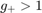), a second stable fixed point may emerge. In order to find a potential memory state, the initial firing rates for the populations need to be increased sufficiently in order to start in the basin of attraction different from the one related to spontaneous activity (corresponds to short, transient stimulus that led to an increase of firing rates).
LrnPar.m = 45.2; % note m < 1/f, otherwise l<0! LrnPar.SDJ = 1.0; r0 = [1.0, 1.0, 1.0, 3.25]; % (+, sel, 0) and all remaining populations rates_spon = CompRate_aEIF_Net_Learn(ModPar,ConPar,LrnPar,r0,rx,0) Lambs = CompEigVal_aEIF_Net_Learn(ModPar,ConPar,LrnPar,rates_spon,rx,0); r0 = [0.25 84.35 0.26 5.1]; % (+, sel, 0) and all remaining populations rates_memo = CompRate_aEIF_Net_Learn(ModPar,ConPar,LrnPar,r0,rx,0) Lambs = CompEigVal_aEIF_Net_Learn(ModPar,ConPar,LrnPar,rates_memo,rx,0);
rates_spon =
1.1253 1.1253 0.7819 4.4324
rates_memo =
0.2476 84.3500 0.2586 5.0725
A bifurcation diagram summarizes the number of fixed points and the activity of the attractor states as a function of the intra-pool connection factor ().
r0 = [1 1 1 3.25]; D = 100.0; g = linspace(45,46,20); [r_spon,r_memo,FPStab] = CompBifDiagram(ModPar,ConPar,LrnPar,r0,rx,g,D); % plot bifurcation diagram hold all; id1_inst = find(FPStab(:,1)>=0); id2_inst = find(FPStab(:,2)>=0); % plot spontaneous state hold all if ~isempty(id1_inst) plot(g(id1_inst),r_spon(id1_inst,2),'bo'); id1 = setdiff(1:length(g),id1_inst); if ~isempty(id1) plot(g(id1),r_spon(id1,2),'bo','MarkerFaceColor','b'); end else plot(g,r_spon(:,2),'bo','MarkerFaceColor','b'); end % plot memory state if ~isempty(id2_inst) plot(g(id2_inst),r_memo(id2_inst,2),'bs'); id2 = setdiff(1:length(g),id2_inst); if ~isempty(id2) plot(g(id2),r_memo(id2,2),'bs','MarkerFaceColor','b'); end else plot(g,r_memo(:,2),'bs','MarkerFaceColor','b'); end xlabel('intra-pool connection factor') ylabel('activity (#sp/s)') snapnow; close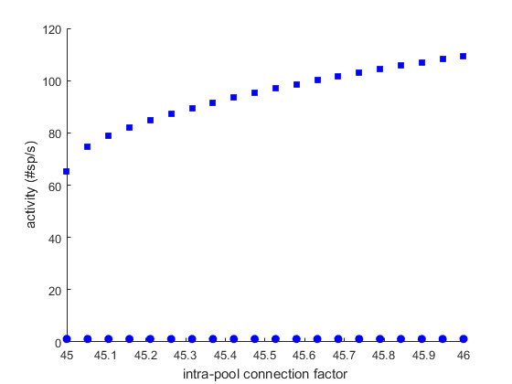
Please note, one usually needs to run through different initial values (r0) to ensure that no stable states are missing.
Moreover, we can also revisite the concept of an energy landscape that allows to visualize the stability of the attractor states. In order to maintain a one-dimensional description, we compute the energy-landscape along the selective population activity and keep the other rates fixed at the values defined by their nullclines:
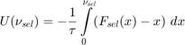
where at each point , the other rates are given by
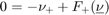
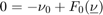
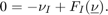
id = 2; FP(1,:) = rates_spon; FP(2,:) = rates_memo; values = linspace(0.5,1.2*FP(2,2),400); E = CompEnergy_aEIF_Net_Learn(values,ModPar,ConPar,LrnPar,FP,rx,1); plot(values,E) xlabel(['Activity of population ' num2str(id) ' (sp/s)']) ylabel('Potential landscape (a.u.)') snapnow; close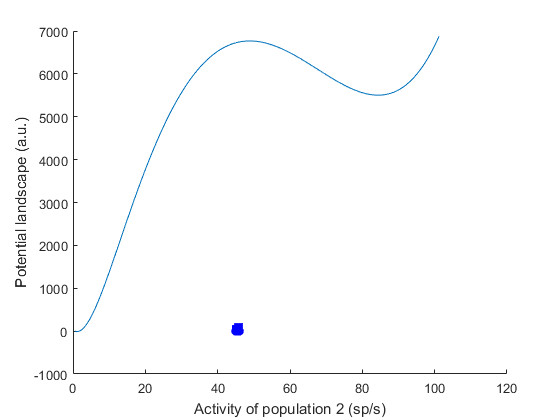